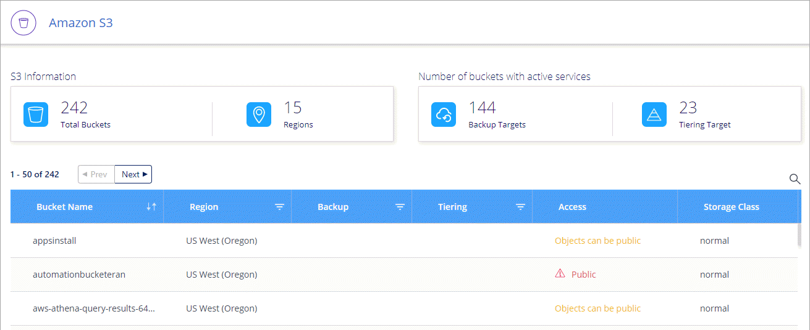
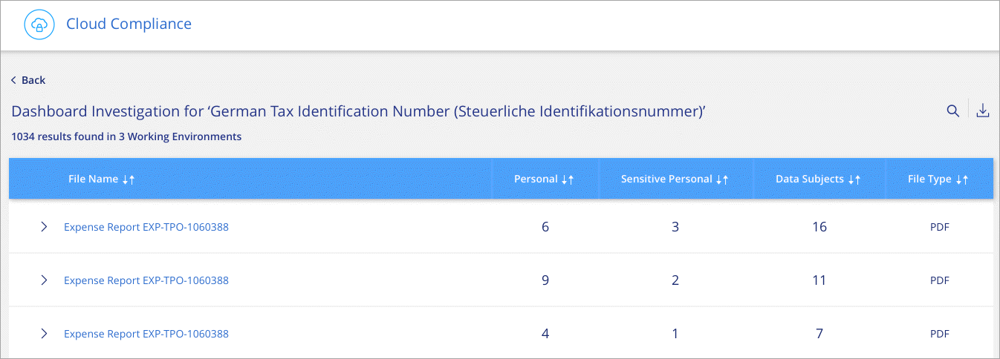

Solicitar cambios en el documento
Solicitar cambios en el documento Editar en GitHub
Editar en GitHub Guía del colaborador
Guía del colaboradorVaya a los documentos de la última versión.
Novedades de Cloud Manager 3.8
Colaboradores
Cloud Manager suele introducir una nueva versión cada mes para traíd nuevas funciones, mejoras y correcciones de errores.

|
¿Busca una versión anterior?"Novedades en 3.7" "Novedades en 3.6" "Novedades en 3.5" |
Nuevo proveedor de Terraform (19 de octubre de 2020)
Hemos desarrollado un nuevo proveedor de Terraform que los equipos de DevOps pueden utilizar con Cloud Manager para automatizar e integrar Cloud Volumes ONTAP con la infraestructura como código.
Actualización de Cloud Manager 3.8.9 (18 de octubre de 2020)
Aprovechando "Spot’s Cloud Analyzer", Cloud Manager ahora puede proporcionar un análisis de costes de alto nivel de su gasto en informática en la nube e identificar ahorros potenciales. Esta información está disponible en el servicio Compute de Cloud Manager. "Leer más".

Actualización de Cloud Manager 3.8.9 (13 de octubre de 2020)
Hemos lanzado dos actualizaciones de Cloud Tiering:
-
Las licencias de Cloud Tiering ya están disponibles en Cloud Manager.
Pague por la organización en niveles de los datos de un clúster ONTAP en las instalaciones al cloud a través de una suscripción de pago por uso, una licencia de organización en niveles de ONTAP llamada FabricPool, o una combinación de ambos.
-
El servicio de almacenamiento en niveles en el cloud independiente se ha retirado. Ahora debería acceder a Cloud Tiering directamente desde Cloud Manager, donde están disponibles todas las mismas funciones y funcionalidades.
Cloud Manager 3.8.9 (4 de octubre de 2020)
Mejoras en el cumplimiento normativo del cloud
-
Existe una nueva función de Cloud Compliance Viewer en Cloud Manager.
Los usuarios a los que se asigna esta función solo pueden ver la información de cumplimiento y generar informes para los espacios de trabajo a los que tienen permiso de acceso. No pueden gestionar la configuración de Cloud Compliance y no pueden acceder a ninguna otra función y servicios de Cloud Manager. Este puede ser el papel perfecto para su equipo legal para poder controlar los resultados de Cloud Compliance Scan. Consulte "roles de usuario" para obtener más detalles.
-
Se ha añadido compatibilidad para escanear esquemas de base de datos MongoDB y PostgreSQL. Consulte "analizando esquemas de base de datos" si quiere más información.
-
Los precios de Cloud Compliance cambian a fecha del 7 de octubre.
Los primeros 1 TB de datos que analiza Cloud Compliance en un espacio de trabajo de Cloud Manager son gratuitos. Esto incluye datos de Cloud Volumes ONTAP Volumes, Azure NetApp Files Volumes, bloques de Amazon S3 y esquemas de base de datos. Se requiere una suscripción para analizar cualquier dato adicional después de alcanzar 1 TB. Consulte "precios" para obtener más detalles.
Mejoras de Cloud Volumes Service para AWS
Al crear un volumen nuevo, puede optar por basar ese volumen en una copia Snapshot existente de otro volumen.
Integración con Cloud Sync
El servicio Cloud Sync de NetApp ya está disponible en Cloud Manager. Cloud Sync ofrece una forma sencilla, segura y automatizada de migrar sus datos desde cualquier destino de origen a cualquier destino de destino, en el cloud o en las instalaciones. "Leer más".
Mejoras en la gestión de cuentas
Hemos añadido más formas de gestionar tu cuenta.
-
Ya está disponible una descripción general de los recursos de su cuenta.
Puede ver rápidamente el número de usuarios, áreas de trabajo, conectores y suscripciones en su cuenta.
-
Puede cambiar el nombre de su cuenta.
-
Puede copiar su ID de cuenta, ID de área de trabajo o ID de conector.
Copiar estos ID ayudará con las funciones de automatización que estamos planificando.
-
Puede desactivar el uso de la plataforma SaaS.
No recomendamos desactivar la plataforma SaaS a menos que necesite para cumplir con las políticas de seguridad de su empresa. Al deshabilitar la plataforma SaaS, esto limita su capacidad para usar los servicios de cloud integrados de NetApp. "Leer más".

Cambios en las regiones gubernamentales
Si implementa un conector en una región de AWS GovCloud, una región de Azure Gov o una región de Azure DoD, el acceso a Cloud Manager solo está disponible a través de la dirección IP de host de un conector. El acceso a la plataforma SaaS está desactivado para toda la cuenta.
Esto significa que solo los usuarios con privilegios que pueden acceder al VPC/vnet interno del usuario final pueden usar la IU o la API de Cloud Manager.
Actualización de Cloud Manager 3.8.8 (22 de septiembre de 2020)
Hemos mejorado el servicio Kubernetes para facilitar el uso y el uso de funcionalidades adicionales:
-
Hemos facilitado el descubrimiento de los clústeres de Kubernetes que se ejecutan en el servicio Kubernetes gestionado de su proveedor de cloud.
Simplemente haga clic en Discover Clusters y Cloud Manager descubrirá sus clústeres administrados con los permisos de proveedor de cloud que ya ha proporcionado.
-
Ahora puede ver más información sobre un clúster de Kubernetes detectado, incluido su estado, la cantidad de volúmenes, las clases de almacenamiento, etc.

-
Hemos añadido la comprobación de los recursos y errores para garantizar que la comunicación está disponible entre el clúster y Cloud Volumes ONTAP. Si no es así, le informaremos.
Tenga en cuenta que la cuenta de servicio de un conector requiere los siguientes permisos para detectar y gestionar clústeres de Kubernetes que se ejecutan en Google Kubernetes Engine (GKE):
- container.*Actualización de Cloud Manager 3.8.8 (10 de septiembre de 2020)
Las siguientes mejoras están disponibles al implementar la caché de archivos global mediante Cloud Manager:
-
Un par de alta disponibilidad de Cloud Volumes ONTAP en AWS ahora es compatible como plataforma de almacenamiento de back-end para su almacenamiento central.
-
Se pueden implementar varias instancias principales de caché global de archivos en un diseño de carga distribuida.
Cloud Manager 3.8.8 (9 de septiembre de 2020)
Compatibilidad con Cloud Volumes Service para Google Cloud
-
Añada un entorno de trabajo para gestionar volúmenes existentes de Cloud Volumes Service para GCP y crear nuevos volúmenes. "Vea cómo".
-
Cree y gestione volúmenes NFSv3 y NFSv4.1 para clientes de Linux y UNIX y volúmenes de SMB 3.x para clientes de Windows.
-
Crear, eliminar y restaurar copias de Snapshot de volumen.
Backup en cloud ahora admite clústeres de ONTAP en las instalaciones
Empiece a realizar backups de datos desde sus sistemas ONTAP en las instalaciones al cloud. Habilite Backup en el cloud en sus entornos de trabajo en las instalaciones para realizar backups de volúmenes en el almacenamiento de Azure Blob. "Leer más".
Mejoras de backup en el cloud
Hemos revisado la interfaz de usuario para una mayor facilidad de uso:
-
Página de lista de volúmenes para ver fácilmente los volúmenes de los que se va a realizar un backup junto con los backups disponibles
-
Página de ajustes de copia de seguridad para ver la configuración de copia de seguridad de cada entorno de trabajo
Mejoras en el cumplimiento normativo del cloud
-
Capacidad de analizar datos de bases de datos
Analice sus bases de datos para identificar los datos personales y confidenciales que se encuentran en cada esquema. Entre las bases de datos compatibles se incluyen Oracle, SAP HANA y SQL Server (MSSQL). "Obtenga más información sobre el análisis de bases de datos".
-
Capacidad de analizar volúmenes de protección de datos (DP)
Los volúmenes de DP son volúmenes de destino de las operaciones de SnapMirror, normalmente de los clústeres de ONTAP en las instalaciones. Ahora puede identificar fácilmente los datos personales y confidenciales que se encuentran en esos archivos en las instalaciones. "Descubra cómo".
Navegación actualizada
Hemos actualizado la cabecera en Cloud Manager para que pueda navegar más fácilmente entre los servicios cloud de NetApp.
Haga clic en Ver todos los servicios y puede anclar y desanclar los servicios que desea ver en la navegación.

Como puede ver, también hemos actualizado las listas desplegables cuenta, espacio de trabajo y conector, por lo que es más fácil ver sus selecciones actuales.
Mejoras administrativas
-
Ahora puede quitar conectores inactivos de Cloud Manager. "Vea cómo".

-
Ahora puede sustituir la suscripción a Marketplace que está asociada con sus credenciales de proveedor de cloud. Si alguna vez necesita cambiar la forma en que se le cobra, este cambio puede ayudarle a asegurarse de que se le cobra a través de la suscripción a Marketplace correcta.
Vea cómo "En AWS", "En Azure", y. "En GCP".
Actualización de los permisos de Azure necesarios (6 de agosto de 2020)
Para evitar que se produzcan errores en la implementación de Azure, asegúrese de que su política de Cloud Manager en Azure incluya el siguiente permiso:
"Microsoft.Resources/deployments/operationStatuses/read"Ahora Azure requiere este permiso para algunas implementaciones de máquinas virtuales (depende del hardware físico subyacente que se utilice durante la implementación).
Cloud Manager 3.8.7 (3 de agosto de 2020)
Nueva experiencia de software como servicio
Hemos presentado al completo una experiencia de software como servicio para Cloud Manager. Esta nueva experiencia le facilita el uso de Cloud Manager y nos permite proporcionar funciones adicionales para gestionar su infraestructura de cloud híbrido.
Cloud Manager incluye una "Interfaz basada en SaaS" Que se integra con Cloud Central de NetApp y con conectores que permiten a Cloud Manager gestionar recursos y procesos dentro de su entorno de cloud público. (En realidad, el conector es el mismo que el software de Cloud Manager existente que ha instalado).

|
En la mayoría de los casos, es necesario un conector, pero no es necesario utilizar Azure NetApp Files, Cloud Volumes Service ni Cloud Sync de Cloud Manager. |
Como se ha mencionado anteriormente en estas notas de la versión, deberá actualizar el tipo de máquina de sus conectores para acceder a las nuevas capacidades que ofrecemos. Cloud Manager le pedirá instrucciones para cambiar el tipo de máquina. "Leer más".
Mejoras de Cloud Volumes ONTAP
Cloud Volumes ONTAP ofrece dos mejoras.
-
Múltiples licencias BYOL para asignar capacidad adicional
Ahora puede comprar varias licencias para un sistema BYOL de Cloud Volumes ONTAP con el fin de asignar más de 368 TB de capacidad. Por ejemplo, puede adquirir dos licencias para asignar hasta 736 TB de capacidad a Cloud Volumes ONTAP. O bien podría comprar cuatro licencias para obtener hasta 1.4 PB.
El número de licencias que se pueden comprar para un único sistema de nodo o par de alta disponibilidad es ilimitado.
Tenga en cuenta que los límites de disco pueden impedir que llegue al límite de capacidad utilizando solo discos. Puede superar el límite de discos mediante "organización en niveles de los datos inactivos en el almacenamiento de objetos". Para obtener más información acerca de los límites de disco, consulte "Límites de almacenamiento en las notas de la versión de Cloud Volumes ONTAP".
-
Cifrar discos administrados de Azure utilizando claves externas
Ahora puede cifrar discos gestionados de Azure en sistemas Cloud Volumes ONTAP de un solo nodo utilizando claves externas de otra cuenta. Esta función es compatible con el uso de API.
Solo tiene que agregar lo siguiente a la solicitud API cuando crea el sistema de un solo nodo:
"azureEncryptionParameters": { "key": <azure id of encryptionset> }Esta función requiere nuevos permisos, como se muestra en la última "Política de Cloud Manager para Azure".
"Microsoft.Compute/diskEncryptionSets/read"
Mejoras de Azure NetApp Files
Esta versión incluye varias mejoras de soporte para Azure NetApp Files.
-
Configuración de Azure NetApp Files
Ahora puede configurar y gestionar Azure NetApp Files directamente desde Cloud Manager. "Vea cómo".
-
Nueva compatibilidad con el protocolo
Ahora es posible crear volúmenes NFSv4.1 y volúmenes SMB.
-
Gestión de instantáneas de volumen y pool de capacidad
Cloud Manager permite crear, eliminar y restaurar snapshots de volúmenes. También puede crear nuevos pools de capacidad y especificar sus niveles de servicio.
-
Capacidad para editar volúmenes
Puede editar un volumen cambiando su tamaño y gestionando las etiquetas.
Mejoras de Cloud Volumes Service para AWS
Cloud Manager admite muchas mejoras en Cloud Volumes Service para AWS.
-
Nueva compatibilidad con el protocolo
Ahora puede crear volúmenes NFSv4.1, volúmenes SMB y volúmenes de protocolo doble. Antes, solo podía crear y detectar volúmenes NFSv3 en Cloud Manager.
-
Compatibilidad con Snapshot
Es posible crear políticas de Snapshot para automatizar la creación de copias de Snapshot de volumen, crear una copia de Snapshot bajo demanda, restaurar un volumen a partir de una copia Snapshot, crear un nuevo volumen según una copia de Snapshot existente, etc. Consulte "Permite gestionar copias de Snapshot de Cloud Volumes" si quiere más información.
-
Cree el volumen inicial en una región desde Cloud Manager
Antes de esta versión, se debía crear el primer volumen de cada región en la interfaz de Cloud Volumes Service para AWS. Ahora puede suscribirse a. "Una de las ofertas de Cloud Volumes Service de NetApp en AWS Marketplace" Y, a continuación, cree el primer volumen desde Cloud Manager.
Mejoras en el cumplimiento normativo del cloud
Las siguientes mejoras ya están disponibles para Cloud Compliance.
-
Proceso de implementación revisado para su instancia de Cloud Compliance
La instancia de Cloud Compliance se configura e implementa usando un nuevo asistente de Cloud Manager. Una vez completada la implementación, se habilita el servicio para cada entorno de trabajo que desee analizar.
-
Capacidad para seleccionar los volúmenes que se van a escanear dentro de un entorno de trabajo
Ahora puede habilitar y deshabilitar el análisis de volúmenes individuales en un entorno de trabajo Cloud Volumes ONTAP o Azure NetApp Files. Si no necesita analizar ciertos volúmenes para asegurar el cumplimiento de normativas, apáguelos.
-
* Pestañas de navegación para saltar rápidamente a su área de interés*
Las nuevas fichas de Panel, Investigación y Configuración permiten acceder a estas secciones con mayor facilidad.
-
Informe HIPAA
Ya está disponible un nuevo Informe de la Ley de Portabilidad y responsabilidad de Seguros médicos (HIPAA). Este informe está diseñado para ayudar en el requisito de su organización de cumplir con las leyes de privacidad de datos HIPAA.
-
Nuevo tipo de datos personales sensibles
Cloud Compliance puede encontrar ahora códigos médicos ICD-9-cm en archivos.
-
Nuevo tipo de datos personales
Cloud Compliance ahora puede encontrar dos nuevos identificadores nacionales en los archivos: Croata ID (OIB) e ID Griego.
Mejoras de backup en el cloud
Las siguientes mejoras ahora están disponibles para Backup en el cloud.
-
Traer su propia licencia (BYOL) está ahora disponible
Backup en Cloud solo está disponible con licencia de pago por uso (PAYGO). Una licencia BYOL le permite comprar una licencia de NetApp para usar Backup en cloud durante un determinado periodo de tiempo y un espacio de backup máximo. Cuando se alcance cualquiera de los límites, deberá renovar la licencia.
-
Compatibilidad con volúmenes de protección de datos (DP)
Los volúmenes de protección de datos pueden realizarse backups y restaurarse ahora.
Compatibilidad con caché de archivos global
NetApp Global File Cache le permite consolidar silos de servidores de archivos distribuidos en un espacio de almacenamiento global cohesivo en el cloud público. Esto crea un sistema de archivos con acceso global en la nube que todas las ubicaciones distribuidas pueden usar como si fueran locales.
A partir de esta versión, la instancia de gestión de caché de archivos global y la instancia de Core se pueden implementar y gestionar a través de Cloud Manager. Esto permite ahorrar muchas horas durante el proceso de implementación inicial y ofrece un solo panel a través de Cloud Manager para este y otros sistemas implementados. Las instancias de Global File Cache Edge aún se implementan localmente en sus oficinas remotas.
Consulte "Información general sobre Global File Cache" si quiere más información.
La configuración inicial que se puede implementar mediante Cloud Manager debe cumplir con los siguientes requisitos. Otras configuraciones como Cloud Volumes Service, Azure NetApp Files y Cloud Volumes Service para AWS y GCP se siguen poniendo en marcha siguiendo los procedimientos anteriores. "Leer más".
-
La plataforma de almacenamiento de back-end que utiliza como almacenamiento central debe ser un entorno de trabajo en el que haya puesto en marcha un par de alta disponibilidad de Cloud Volumes ONTAP en Azure.
Actualmente, otras plataformas de almacenamiento y otros proveedores de cloud no son compatibles con Cloud Manager, pero se pueden poner en marcha utilizando procedimientos de puesta en marcha anteriores.
-
GFC Core solo se puede poner en marcha como instancia independiente.
Si necesita utilizar un diseño distribuido de carga que incluya varias instancias principales, debe utilizar los procedimientos heredados.
Esta función requiere nuevos permisos, como se muestra en la última "Política de Cloud Manager para Azure".
"Microsoft.Resources/deployments/operationStatuses/read",
"Microsoft.Insights/Metrics/Read",
"Microsoft.Compute/virtualMachines/extensions/write",
"Microsoft.Compute/virtualMachines/extensions/read",
"Microsoft.Compute/virtualMachines/extensions/delete",
"Microsoft.Compute/virtualMachines/delete",
"Microsoft.Network/networkInterfaces/delete",
"Microsoft.Network/networkSecurityGroups/delete",
"Microsoft.Resources/deployments/delete",La mejora de la experiencia requiere un tipo de máquina más fuerte (15 de julio de 2020)
A medida que mejoremos la experiencia de Cloud Manager, necesitará actualizar el tipo de máquina para acceder a las nuevas funcionalidades que ofreceremos. Las mejoras incluirán un "Experiencia de software como servicio para Cloud Manager" e integraciones de servicios cloud nuevas y mejoradas.
Cloud Manager le pedirá instrucciones para cambiar el tipo de máquina.
A continuación se ofrecen algunos detalles:
-
Con el fin de garantizar que hay disponibles recursos adecuados para disponer de las nuevas funciones en Cloud Manager, hemos cambiado el tipo predeterminado de instancia, máquina virtual y máquina virtual:
-
AWS: t3.xlarge
-
Azure: DS3 v2
-
GCP: n1-estándar-4
Los tamaños predeterminados son el mínimo admitido "Según los requisitos de CPU y RAM".
-
-
Como parte de esta transición, Cloud Manager requiere acceso al siguiente extremo para poder obtener imágenes de software de componentes de contenedores en una infraestructura Docker:
https://cloudmanagerinfraprod.azurecr.io
Asegúrese de que el firewall permite el acceso a este extremo desde Cloud Manager.
Cloud Manager 3.8.6 (6 de julio de 2020)
Compatibilidad con volúmenes iSCSI
Cloud Manager ahora le permite crear volúmenes iSCSI para clústeres de Cloud Volumes ONTAP y ONTAP en las instalaciones directamente desde la interfaz de usuario.
Cuando se crea un volumen iSCSI, Cloud Manager crea automáticamente un LUN. Lo hemos hecho sencillo creando sólo una LUN por volumen, por lo que no hay que realizar ninguna gestión. Después de crear el volumen, "Utilice el IQN para conectarse con la LUN del hosts".
|
|
Puede crear LUN adicionales desde System Manager o desde la CLI. |
Soporte para la política de toda la organización en niveles
Ahora es posible elegir la política de organización en niveles al crear o modificar un volumen para Cloud Volumes ONTAP. Cuando usa la política de todos los niveles, los datos se marcan inmediatamente como inactivos y organizados en niveles en Lo antes posible. de almacenamiento de objetos. "Más información acerca de la organización en niveles de los datos".
Transición de Cloud Manager a SaaS (22 de junio de 2020)
Presentamos una experiencia de software como servicio para Cloud Manager. Esta nueva experiencia le facilita el uso de Cloud Manager y nos permite proporcionar funciones adicionales para gestionar su infraestructura de cloud híbrido. "Leer más".
Cloud Manager 3.8.5 (31 de mayo de 2020)
Es necesaria una nueva suscripción en Azure Marketplace
Azure Marketplace cuenta con una nueva suscripción. Esta suscripción única es necesaria para desplegar Cloud Volumes ONTAP 9.7 PAYGO (excepto su sistema de prueba de 30 días gratis). Esta suscripción también nos permite ofrecer funciones complementarias para Cloud Volumes ONTAP PAYGO y BYOL. A partir de esta suscripción se le cobrará cada sistema Cloud Volumes ONTAP PAYGO que cree y cada función complementaria que habilite.
Cloud Manager le pedirá que se suscriba a esta oferta cuando ponga en marcha un nuevo sistema Cloud Volumes ONTAP (9.7 P1 o posterior).

Mejoras de backup en el cloud
Las siguientes mejoras ahora están disponibles para Backup en el cloud.
-
En Azure, ahora puede crear un nuevo grupo de recursos o seleccionar un grupo de recursos existente en lugar de que Cloud Manager lo cree uno para usted. No se puede cambiar el grupo de recursos después de habilitar Backup en el cloud.
-
En AWS, ahora puede realizar backups de instancias de Cloud Volumes ONTAP que residen en una cuenta de AWS diferente a la de AWS de Cloud Manager.
-
Ahora hay disponibles más opciones al seleccionar la programación de backup para los volúmenes. Además de las opciones de backup diaria, semanal y mensual, ahora puede seleccionar una de las políticas definidas por el sistema que proporcionan normativas de combinación, como 30 backups diarios, 13 semanales y 12 mensuales.
-
Después de eliminar todos los backups de un volumen, ahora es posible volver a crear backups para ese volumen. Esta era una limitación conocida en la versión anterior.
Mejoras en el cumplimiento normativo del cloud
Las siguientes mejoras están disponibles para Cloud Compliance.
-
Ahora puede analizar bloques de S3 que están en cuentas de AWS diferentes a la instancia de Cloud Compliance. Solo tiene que crear una función en esa nueva cuenta para que la instancia de Cloud Compliance existente pueda conectarse a esos bloques. "Leer más".
Si ha configurado Cloud Compliance antes de la versión 3.8.5, deberá modificar el existente "Rol IAM para la instancia de Cloud Compliance" para utilizar esta funcionalidad.
-
Ahora puede filtrar el contenido de la página Investigación para que muestre sólo los resultados que desea ver. Los filtros incluyen entorno de trabajo, categoría, datos privados, tipo de archivo, fecha de última modificación, Y si los permisos del objeto S3 están abiertos al acceso público.

-
Ahora puede activar y desactivar Cloud Compliance en un entorno de trabajo directamente desde la pestaña Cloud Compliance.
Actualización de Cloud Manager 3.8.4 (10 de mayo de 2020)
Lanzamos una mejora a Cloud Manager 3.8.4.
Integración con Cloud Insights
Al aprovechar el servicio Cloud Insights de NetApp, Cloud Manager le proporciona información sobre el estado y el rendimiento de sus instancias de Cloud Volumes ONTAP y le ayuda a solucionar problemas y optimizar el rendimiento de su entorno de almacenamiento en cloud. "Leer más".
Cloud Manager 3.8.4 (3 de mayo de 2020)
Cloud Manager 3.8.4 incluye la siguiente mejora.
Mejoras de backup en el cloud
Las siguientes mejoras ahora están disponibles para Backup en el cloud (anteriormente denominado Backup to S3 para AWS):
-
Copia de seguridad en almacenamiento de Azure Blob
Backup en cloud ya está disponible para Cloud Volumes ONTAP en Azure. Backup en cloud proporciona funcionalidades de backup y restauración para la protección y archivado a largo plazo de sus datos en el cloud. "Leer más".
-
Eliminación de copias de seguridad
Ahora puede eliminar todos los backups de un volumen específico directamente desde la interfaz de Cloud Manager. "Leer más".
Cloud Manager 3.8.3 (5 de abril de 2020)
Integración con la organización en niveles del cloud
El servicio Cloud Tiering de NetApp ya está disponible desde Cloud Manager. Cloud Tiering le permite organizar los datos en niveles desde un clúster ONTAP en las instalaciones hasta el almacenamiento de objetos en el cloud de menor coste. De este modo se libera espacio de almacenamiento de alto rendimiento en el clúster para que se creen más cargas de trabajo.
Migración de datos a Azure NetApp Files
Ahora puede migrar datos de NFS o SMB a Azure NetApp Files directamente desde Cloud Manager. El servicio Cloud Sync de NetApp alimenta la sincronización de datos.
Mejoras en el cumplimiento normativo del cloud
Las siguientes mejoras ya están disponibles para Cloud Compliance.
-
Prueba gratuita de 30 días para Amazon S3
Ya está disponible una prueba gratuita de 30 días para analizar datos de Amazon S3 con Cloud Compliance. Si anteriormente habilitó Cloud Compliance en Amazon S3, su prueba gratuita de 30 días estará activa a partir de hoy (5 de abril de 2020).
Es necesario suscribirse al AWS Marketplace para seguir analizando Amazon S3 una vez finalizada la prueba gratuita. "Aprenda a suscribirse".
-
Nuevo tipo de datos personales
Cloud Compliance puede encontrar ahora un nuevo identificador nacional en los archivos: ID Brasileño (CPF).
-
Soporte para categorías de metadatos adicionales
Cloud Compliance ahora puede clasificar sus datos en nueve categorías adicionales de metadatos. "Vea la lista completa de las categorías de metadatos compatibles".
Backup a S3
Ahora, las siguientes mejoras están disponibles para el servicio Backup to S3.
-
Política de ciclo de vida de S3 para copias de seguridad
Las copias de seguridad empiezan en la clase de almacenamiento Standard y realizan la transición a la clase de almacenamiento Standard-Infrecuente Access después de 30 días.
-
Eliminación de copias de seguridad
Ahora es posible eliminar backups con una API de Cloud Manager. "Leer más".
-
Bloquear el acceso público
Cloud Manager ahora habilita el "Función de acceso público en bloque de Amazon S3" En el bloque de S3, donde se almacenan los backups.
Volúmenes iSCSI mediante API
Las API de Cloud Manager ahora le permiten crear volúmenes iSCSI. "Vea un ejemplo aquí".
Cloud Manager 3.8.2 (1 de marzo de 2020)
Entornos de trabajo de Amazon S3
Cloud Manager ahora detecta automáticamente información sobre los bloques de Amazon S3 que residen en la cuenta de AWS en el lugar donde está instalada. Esto le permite ver fácilmente detalles sobre sus bloques de S3, incluida la región, el nivel de acceso, la clase de almacenamiento y si el bloque se utiliza con Cloud Volumes ONTAP para backups o la organización en niveles de los datos. Además, puede analizar los bloques de S3 con Cloud Compliance, como se describe a continuación.

Mejoras en el cumplimiento normativo del cloud
Las siguientes mejoras ya están disponibles para Cloud Compliance.
-
Soporte para Amazon S3
Cloud Compliance ahora puede analizar sus buckets de Amazon S3 para identificar los datos personales y confidenciales que se encuentran en el almacenamiento de objetos S3. Cloud Compliance puede analizar cualquier bloque de la cuenta, independientemente de si se ha creado para una solución de NetApp.
-
Página de investigación
Ahora hay disponible una nueva página de investigación para cada tipo de archivo personal, archivo personal confidencial, categoría y tipo de archivo. La página muestra los detalles de los archivos afectados y le permite ordenar por los archivos que incluyen los datos más personales, datos personales confidenciales y nombres de los temas de datos. Esta página sustituye al informe CSV que estaba disponible anteriormente.
He aquí un ejemplo:

-
PCI DSS Report
Ya está disponible un nuevo informe PCI DSS (estándar de seguridad de datos del sector de tarjetas de pago). Este informe puede ayudarle a identificar la distribución de la información de la tarjeta de crédito a través de sus archivos. Puede ver cuántos archivos contienen información de tarjetas de crédito, tanto si los entornos en funcionamiento están protegidos mediante cifrado o protección contra ransomware, detalles de retención, etc.
-
Nuevo tipo de datos personales sensibles
Cloud Compliance puede encontrar ahora códigos médicos ICD-10-cm, que se utilizan en el sector médico y sanitario.
Versión de NFS para volúmenes
Ahora puede seleccionar la versión de NFS para habilitar en un volumen al crear o editar un volumen para Cloud Volumes ONTAP.

Soporte para las regiones de Azure US Gov
Los pares de alta disponibilidad de Cloud Volumes ONTAP ahora son compatibles con las regiones de Azure US Gov.
Actualización de Cloud Manager 3.8.1 (16 de febrero de 2020)
Lanzamos algunas mejoras a Cloud Manager 3.8.1.
Backup a S3
-
Las copias de backup se almacenan ahora en un bloque de S3 que Cloud Manager crea en su cuenta de AWS, con un bloque por entorno de trabajo Cloud Volumes ONTAP.
-
El backup en S3 ahora se admite en todas las regiones de AWS "Donde se admite Cloud Volumes ONTAP".
-
Se puede configurar la programación de backup como diaria, semanal o mensual.
-
Cloud Manager ya no tiene que configurar private links al servicio Backup to S3.
Se requieren permisos adicionales de S3 para estas mejoras. El rol IAM que proporciona permisos a Cloud Manager debe incluir los permisos más recientes "Política de Cloud Manager".
Actualizaciones de AWS
Hemos introducido compatibilidad con nuevas instancias EC2 y un cambio en el número de discos de datos compatibles con Cloud Volumes ONTAP 9.6 y 9.7. Compruebe los cambios en las notas de la versión de Cloud Volumes ONTAP.
Cloud Manager 3.8.1 (2 de febrero de 2020)
Mejoras en el cumplimiento normativo del cloud
Las siguientes mejoras ya están disponibles para Cloud Compliance.
-
Soporte para Azure NetApp Files
Nos complace anunciar que Cloud Compliance puede analizar Azure NetApp Files para identificar los datos personales y confidenciales que se encuentran en los volúmenes.
-
Estado de escaneado
Cloud Compliance ahora muestra el estado de los análisis de cada volumen CIFS y NFS, incluidos los mensajes de error que puede utilizar para corregir cualquier problema.

-
Filtrar tablero de mandos por medio del entorno de trabajo
Ahora puede filtrar el contenido de la consola de Cloud Compliance para ver los datos de cumplimiento de normativas de entornos de trabajo específicos.

-
Nuevo tipo de datos personales
Cloud Compliance ahora puede identificar una licencia de conducir de California al escanear datos.
-
Soporte para categorías adicionales
Se admiten tres categorías adicionales: Datos de aplicación, registros y archivos de base de datos e índice.
Mejoras en cuentas y suscripciones
Se ha facilitado la selección de una cuenta de AWS o de un proyecto de GCP y de una suscripción de mercado asociada para un sistema Cloud Volumes ONTAP de pago por uso. Estas mejoras ayudan a garantizar que paga con la cuenta o el proyecto adecuados.
Por ejemplo, cuando cree un sistema en AWS, haga clic en Editar credenciales si no desea utilizar la cuenta y la suscripción predeterminadas:

Desde allí, puede elegir las credenciales de cuenta que desee utilizar y la suscripción al mercado AWS asociado. Incluso puede añadir una suscripción al mercado si lo necesita.

Además, si administra varias suscripciones de AWS, puede asignar cada una de ellas a credenciales de AWS diferentes desde la página Credentials de la configuración:

Mejoras en la línea de tiempo
Se ha mejorado la escala de tiempo para proporcionarle más información acerca de los servicios cloud de NetApp que utiliza.
-
La línea de tiempo ahora muestra acciones para todos los sistemas de Cloud Manager dentro de la misma cuenta de Cloud Central
-
Ahora puede encontrar información más fácilmente filtrando, buscando y agregando y quitando columnas
-
Ahora puede descargar los datos de la línea de tiempo en formato CSV
-
En el futuro, la línea de tiempo mostrará acciones para cada servicio cloud de NetApp que utilice (pero puede filtrar la información a un único servicio).

Cloud Manager 3.8 (8 de enero de 2020)
Mejoras de ALTA DISPONIBILIDAD en Azure
Las siguientes mejoras ahora están disponibles para las parejas de alta disponibilidad de Cloud Volumes ONTAP en Azure.
-
Anular bloqueos CIFS para Cloud Volumes ONTAP ha en Azure
Ahora es posible habilitar una configuración en Cloud Manager para evitar problemas con la conmutación al nodo de respaldo del almacenamiento de Cloud Volumes ONTAP durante eventos de mantenimiento de Azure. Cuando se habilita este ajuste, Cloud Volumes ONTAP veta CIFS locks y restablece las sesiones CIFS activas. "Leer más".
-
Conexión HTTPS de Cloud Volumes ONTAP a cuentas de almacenamiento
Ahora puede habilitar una conexión HTTPS desde una pareja de ha Cloud Volumes ONTAP 9.7 a cuentas de almacenamiento de Azure al crear un entorno de trabajo. Tenga en cuenta que al habilitar esta opción, el rendimiento de escritura puede afectar. No se puede cambiar la configuración después de crear el entorno de trabajo.
-
Compatibilidad con las cuentas de almacenamiento de Azure v2 de uso general
Las cuentas de almacenamiento que crea Cloud Manager para los pares de alta disponibilidad Cloud Volumes ONTAP 9.7 ahora son cuentas de almacenamiento generales de v2.
Mejoras en la organización en niveles de datos en GCP
Las siguientes mejoras están disponibles para la organización en niveles de datos de Cloud Volumes ONTAP en GCP.
-
Clases de almacenamiento de Google Cloud para la organización en niveles de datos
Ahora puede elegir una clase de almacenamiento para datos por niveles en Cloud Volumes ONTAP para Google Cloud Storage:
-
Almacenamiento estándar (predeterminado)
-
Almacenamiento Nearline
-
Almacenamiento de Coldline
-
-
Distribución de datos por niveles mediante una cuenta de servicio
A partir del lanzamiento de la versión 9.7, Cloud Manager ahora establece una cuenta de servicio en la instancia de Cloud Volumes ONTAP. Esta cuenta de servicio proporciona permisos para organizar los datos en niveles en un bloque de Google Cloud Storage. Este cambio ofrece más seguridad y requiere menos instalación. Para obtener instrucciones paso a paso al implementar un sistema nuevo, "consulte el paso 4 en esta página".
En la siguiente imagen se muestra el asistente de entorno de trabajo, donde puede seleccionar una clase de almacenamiento y una cuenta de servicio:

Cloud Manager requiere los siguientes permisos de GCP para estas mejoras, como se muestra en la última "Política de Cloud Manager para GCP".
- storage.buckets.update
- compute.instances.setServiceAccount
- iam.serviceAccounts.getIamPolicy
- iam.serviceAccounts.list